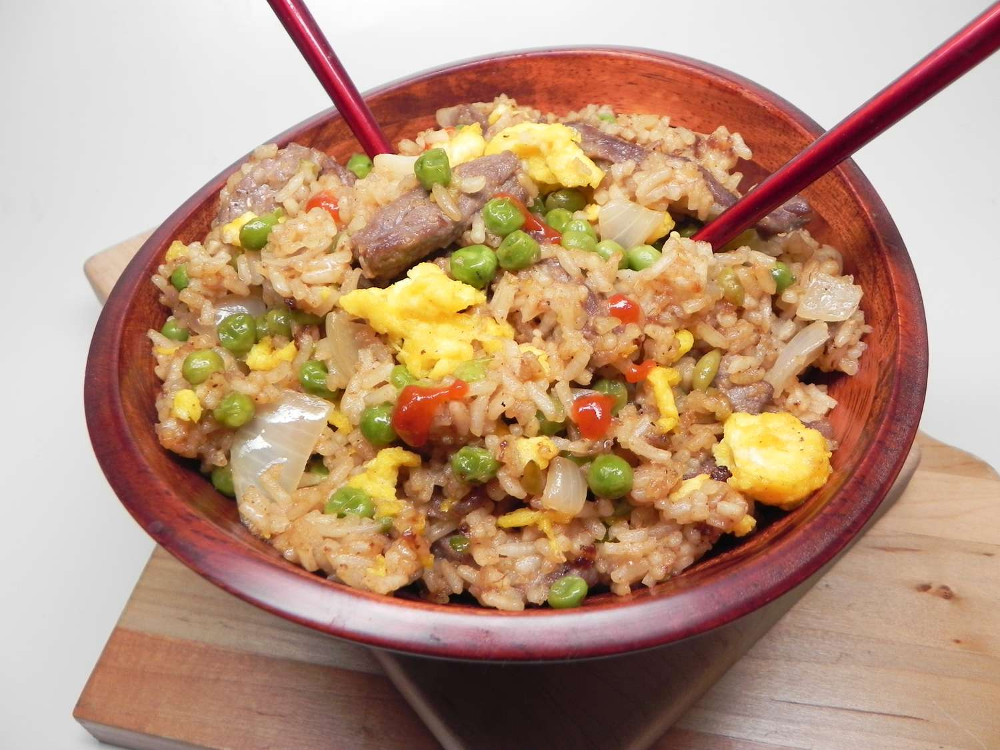

Steak Fried Rice

This Asian-inspired steak fried rice meal with tender flank steak, green peas, and leftover white rice goes from wok to table in less than an hour.
Ingredients
- 1 (1 pound) flank steak
- 5 teaspoons white sugar, divided
- kosher salt to taste
- freshly ground black pepper to taste
- 1 tablespoon cornstarch
- 3 tablespoons vegetable oil, divided
- 2 large eggs, beaten
- 1 onion, diced
- 2 cloves garlic, minced
- 1 teaspoon grated ginger
- 1 cup frozen peas, thawed
- 2 tablespoons water
- 3 cups cooked white rice
- 3 tablespoons soy sauce
- 1 teaspoon white vinegar
- 1 teaspoon sesame oil
Cooking Instructions
- Pat flank steak dry with a paper towel. Cut into bite-sized pieces and transfer to a medium bowl. Season with 1 teaspoon sugar, salt, and pepper. Add cornstarch and toss until well coated.
- Heat 1 teaspoon oil in a wok or large skillet over medium-high heat. Add eggs and scramble using a rubber spatula, 3 to 5 minutes. Remove eggs to a dish.
- Add 1 teaspoon oil and 1/2 of the meat to the wok. Increase heat to high and cook until browned on all sides and cooked through, 3 to 5 minutes. Remove to a plate. Add 1 teaspoon oil and repeat with remaining meat.
- Add remaining 2 tablespoons oil to the wok and reduce heat to medium-low. Add onion, garlic, and ginger; cook until onions begin to soften, 2 to 3 minutes. Add peas and water; cook until peas are tender, 2 to 3 minutes. Add cooked rice, breaking it up with a spatula, and cook until heated through, 2 to 3 minutes. Stir in soy sauce, remaining 4 teaspoons sugar, vinegar, and sesame oil. Add meat and scrambled eggs, toss together, and cook until heated through, about 3 minutes. Serve immediately.
Nutrition Facts
- Calories: 510
- Fat: 23g
- Carbs: 53g
- Protein: 23g